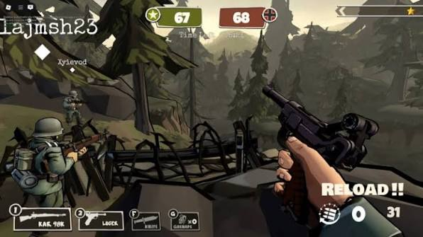
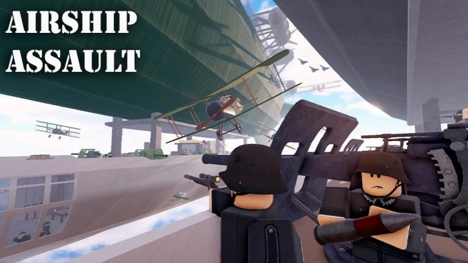
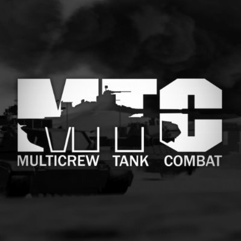
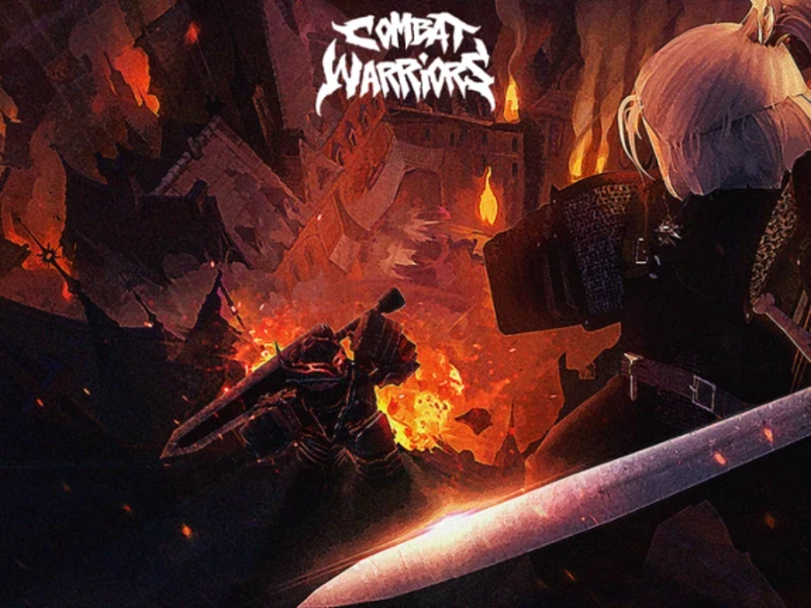
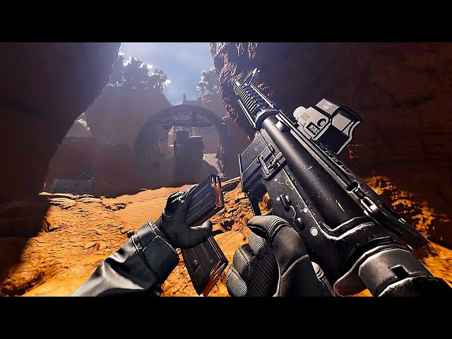
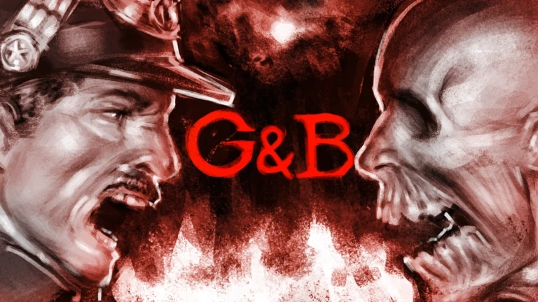
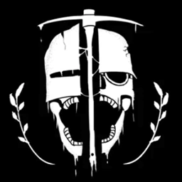
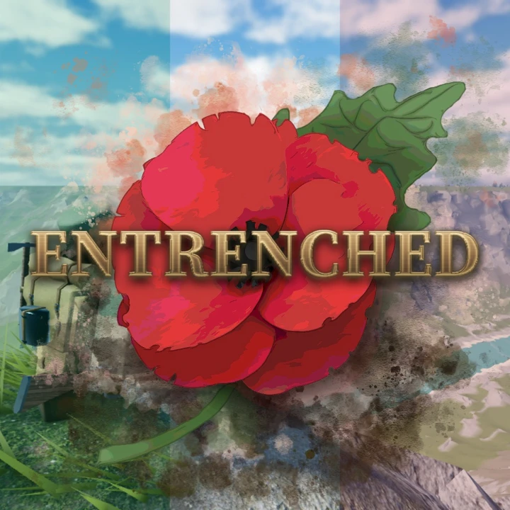
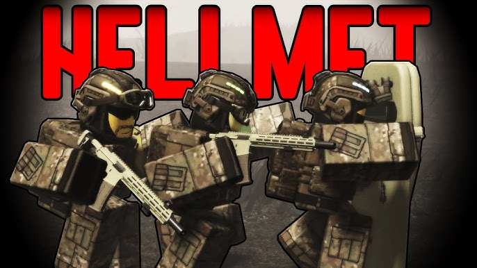
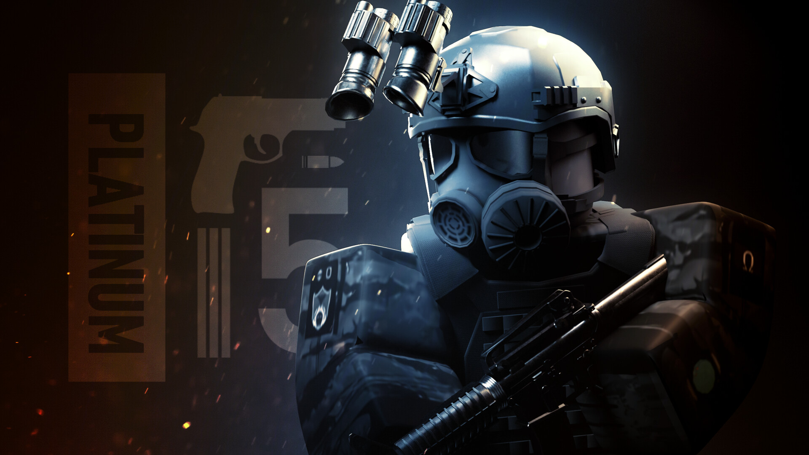

Dogs of War World War II é um jogo que se passa na segunda Guerra Mundial, que possui modelos de baixo polígonos e é imersivo sobre o combate. São duas equipes inimigas que disputam para dominar pontos ou mata-mata.

Airship Assault é um jogo de combate entre dois exércitos diferentes, comumente em uma batalha em altas montanhas ou nos céus. Utilizando dirigíveis, que são a principal base das frotas, zeplins, para alcançar o dirigível e base inimiga, e bombas para destruílos. É um grande jogo de ataque e defesa de dirigíveis.

MTC é um jogo de combate militar, com a disputa entre países distintos (todos ficticios), onde cada um possui seus próprios equipamentos e veículos. As mecânicas são realistas e dinamicas de acordo com a realidade, aumentando a imersão do combate e gameplay.

Combat Wairror é um jogo de combate corpo a corpo brutal e violento, que tem ótimas animações e diversos equipamentos para utilizar em suas batalhas.

Um jogo extremamente realista, cujo nem se parece com o comum da plataforma roblox. Tem modelos 3d bem otimizados e semelhantes ao próprio Call of Duty, sendo jogável no modo multiplayer contra outros jogadores em diversos modos.

Guts and Blackpowder é um jogo de apocalipse durante a época das invasões napoleônicas, onde jogamos como soldados russos, franceses ou britânicos para sobreviver as criaturas que ressugem dos mortos.

Um jogo de combate no subsolo, onde a superficie foi destruida após a última guerra. Um combate muito realista com equipamentos do período medieval e da Primeira Guerra Mundial, com uma batalha entre dois países inimigos. Os jogadores podem escavar e criar seus próprios caminhos pelas cavernas, construir barricadas e participar de vários modos de jogo.

Entrenched é um jogo que simula as grandes batalhas que ocorreram durante a primeira e segunda Guerra Mundial, permitindo que os jogadores escolham classes e batalhem entre duas equipes, cada uma representando um país que participou de um lado das batalhas históricas.

Hellmet é um jogo multiplayer de até 3 pessoas onde somos inseridos para jogar como militares em um fireteam. Temos um objetivo claro em cada missão, que devemos cumprir e arriscar nossas vidas neste jogo imersivo.

BRM5 é um jogo multiplayer, que torna os jogadores em um operador militar, que lutam contra forças terroristas que dominaram uma ilha, chamada de Ronograd, na Rússia. Oferece diversas mecânicas e armamentos, assim como um modo de sobrevivencia no apocalipse zombie e PvP.
